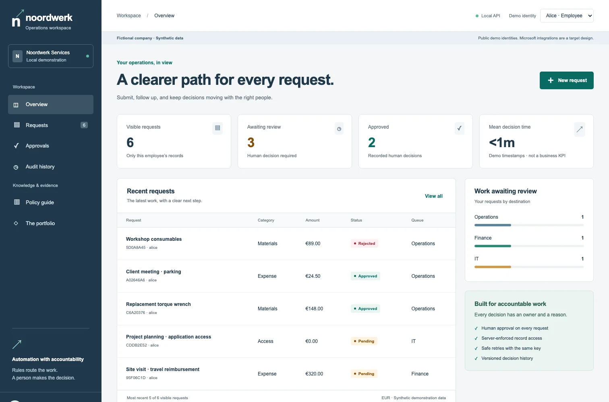
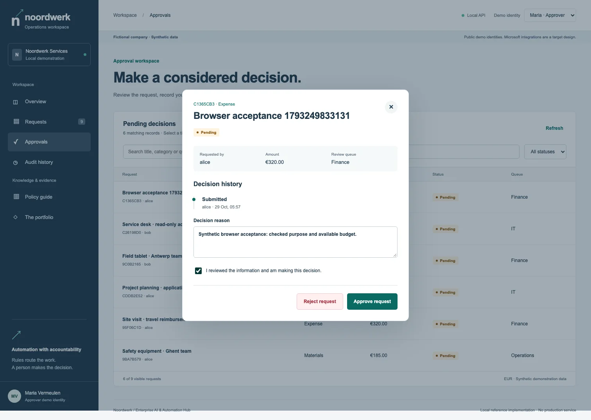
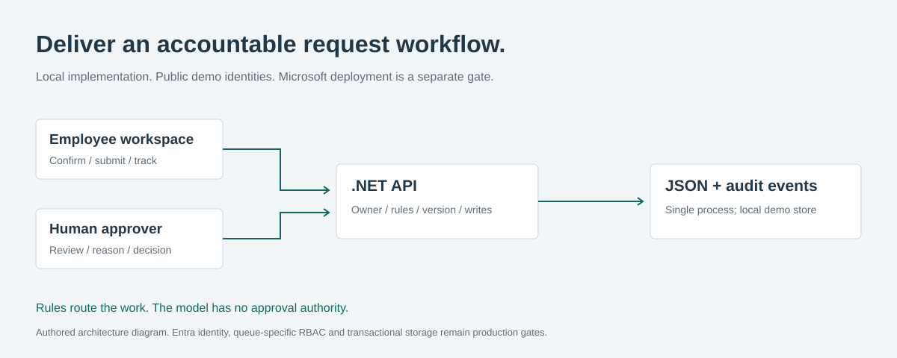
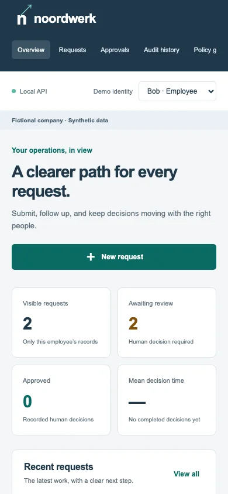

Route the work automatically. Let a person decide.
Materials, expenses and access requests used to arrive by e-mail at Noordwerk, a fictional technical services company. In this hub every request gets a route, an owner and a status in one place. Routing is deterministic and explainable; approval always needs a human with a reason, and every step is in the history.

Why it exists
Requests in an inbox have no owner, no status and no trail.
People e-mail requests and then chase who should approve them. Finance cannot see why something was approved, IT has no clear access boundary, and a resent e-mail creates a second request.
Each request is routed by a written rule, waits for a separate approver who must give a reason, and keeps its full history. A retried submission returns the original instead of a duplicate, and employees only ever see their own records.
Try it · runs in your browser
Submit a request and see where it goes
A browser copy of the request rules in src/Program.cs: the same validation messages, routing rule and idempotency behaviour. Try €250 against €250.01, an access request with an amount, or the same key twice with a different amount.
Simplified to one employee (Alice) and stored only in this tab. The real hub adds approver decisions, role separation, concurrency checks and an audit history.
How it works
Small, explicit and verifiable
Deterministic routing
Access → IT. Materials and expenses up to €250 → Operations, above €250 → Finance. No model is asked to calculate a rule.
Human review
A separate approver records approve or reject with a required reason against the current version of the request.
Reliable API
Owner-scoped idempotency keys, concurrency conflicts and atomic persistence, behind security headers.
Microsoft handoff
Power Platform build specification and acceptance gates for Power Apps, Power Automate, Dataverse, Teams and SharePoint (documented, not deployed).
The flow, step by step
Screens
What it looks like
Screenshots of the working application with synthetic data.



Evidence
What is real, and what is not
REAL Built and verified
- ASP.NET Core 10 API and UI, run locally for the screenshots
- HTTP, storage and optional browser tests, including injected network failure
- BPMN sources with layout and an OpenAPI contract
SIMULATED Mocked or not built yet
- Fictional company and synthetic people; the identity switcher picks demo fixtures, not logins
- One process and a JSON file instead of a database; the audit file is not tamper-proof
- Power Platform parts are documented designs, not tenant deployments
Run it yourself
Run it locally
.NET 10 SDK, Python 3.11+ and Make. No cloud account, paid model or frontend packages.
git clone https://github.com/phlppgdfry/enterprise-ai-automation-hub
cd enterprise-ai-automation-hub
make verify # build + 16 HTTP and storage tests
python3 scripts/start_demo.py
python3 scripts/seed_demo.py # in a second terminal
# open http://127.0.0.1:5088/